Exploring Data, Cleaning, Assessment
Exploring this test dataset
During class we will discuss and identify some of the issues with this dataset - click on link to download the data in CSV (comma separated format) format Dataset_02_fixq2.csv.
NOTE: CSV files are basically TEXT files where each value is entered on rows separated by columns. Each column is assumed to be a different VARIABLE (a different FIELD). Each row is assumed to be a different RECORD - think of a patient’s medical file/folder.
Project Organization
- Create a folder on your computer for this project. For example “C:\N736\exercise01”. Click on New Folder and type in the name of the folder you want. Repeat to create the subfolders.
NOTE: On Windows the folder separator is the left-tilt “back-slash” \. However on a MAC the folder separator is the right-tilt “forward-slash” /. Be sure to check how these folder paths need to be input for (A) your operating system and (B) software. For example, I am on a Windows operating system which expects “\”, but when I am using R I have to type my folder paths using the “/”.
Create Folder - using File Explorer on Windows operating system
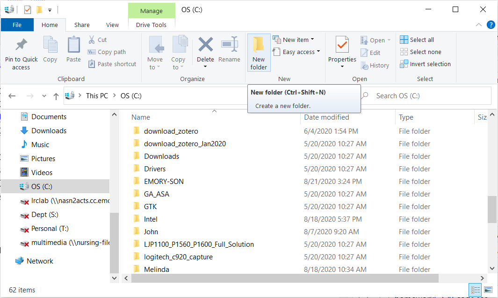
Type in name of folder
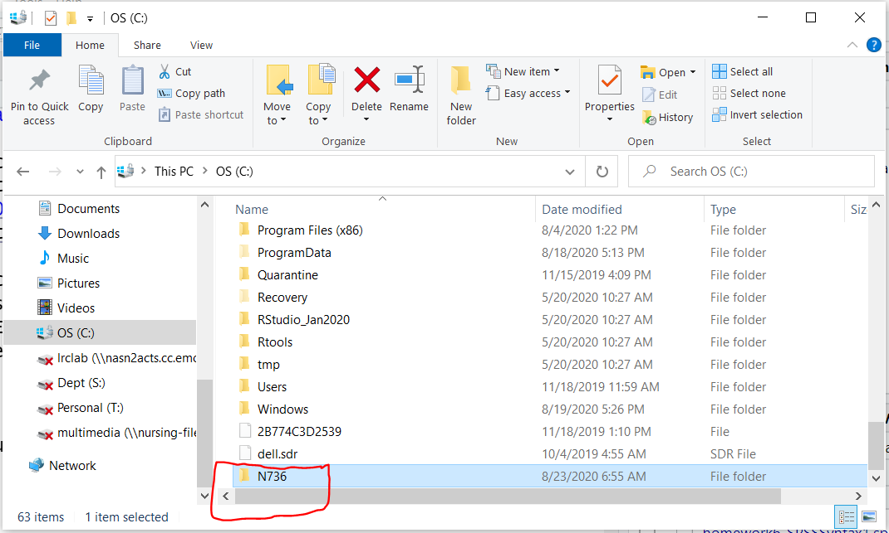
Repeat again for subfolder.
On Windows, click at top to get full path name.
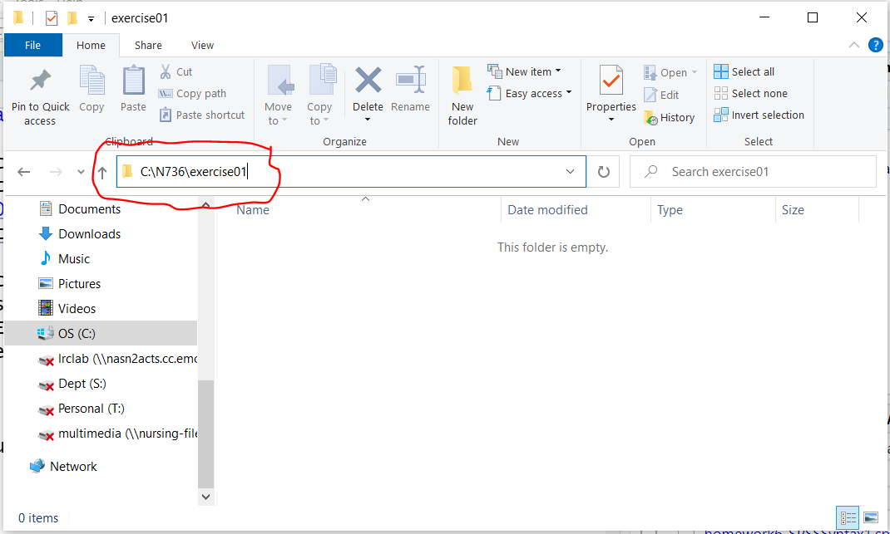
- Now put the data file you just downloaded Dataset_02_fixq2.csv into this folder. This will be the folder you use for ALL files associated with this exercise.
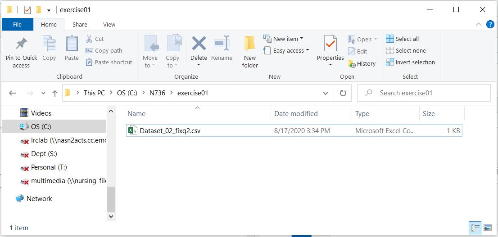
- Follow this process for ALL of your exercises, homeworks and project(s). This will help you stay organized and avoid file location problems with software. Most software assumes that the files you are inoutting, using and saving are in this project folder.
- R projects (should) always start with defining your project folder [File/New Project]
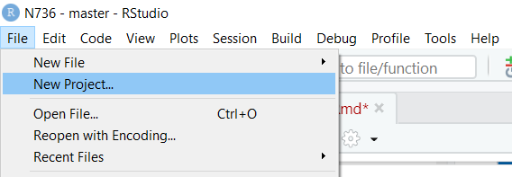
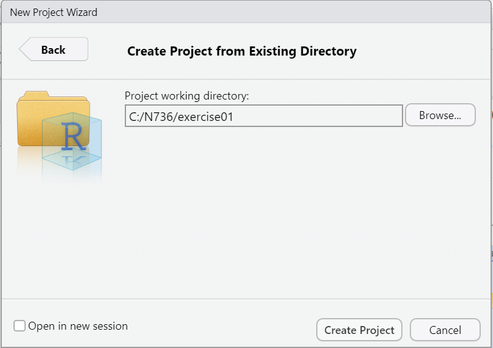
- SAS begins by defining a library using a
libnamestatement
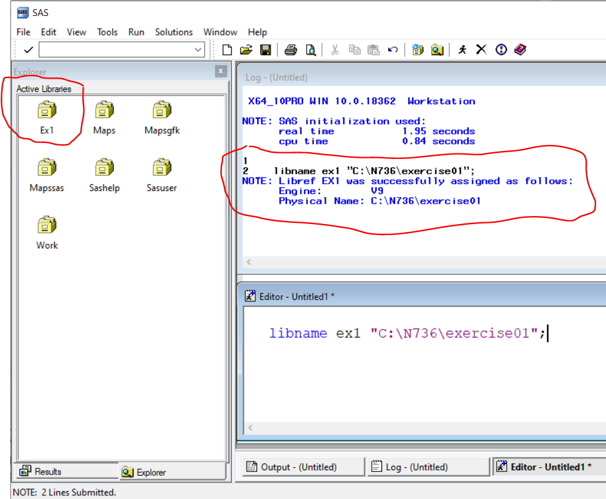
SPSS is the most flexible. It typically defaults to remembering which folder you were in when you last exited the software.
Go to EDIT/OPTIONS and choose “File Locations” TAB
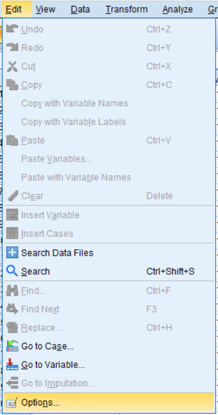
You can either keep the “Last Folder Used” default setting or go ahead and override this setting and put in your project folder path in the “Specified folder” for Data files and Other files. You need to do this AT THE BEGINNING and REDO for every new project.
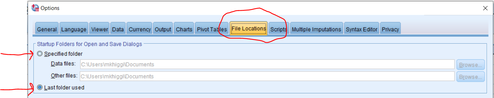
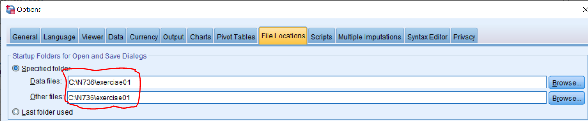
IMPORT CSV Data into your software
Details are provided below for importing the data into each stats software: SPSS, SAS and R.
SPSS
SPSS - Import CSV Data File
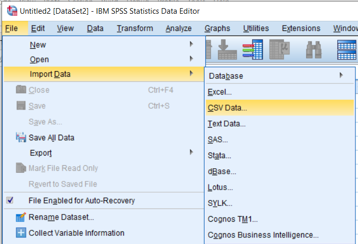
Follow the steps in the wizard. Click “PASTE” to save the SYNTAX for importing this datafile.
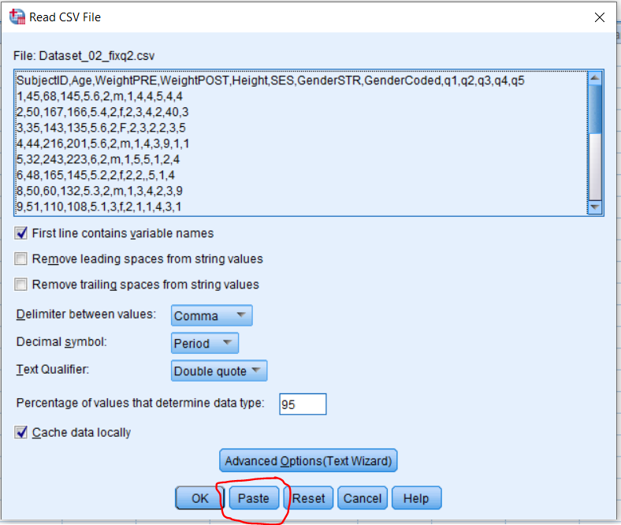
SAS
SAS - Import CSV Data File
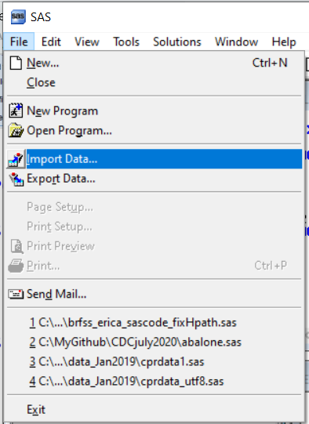
Follow the steps in the wizard. At the end you have the option to save the SAS (program) which will save the code for importing this dataset.
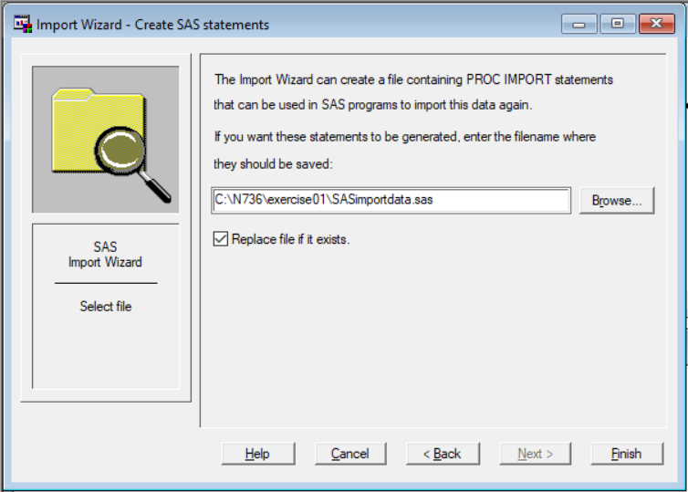
R
R - Import CSV Data File
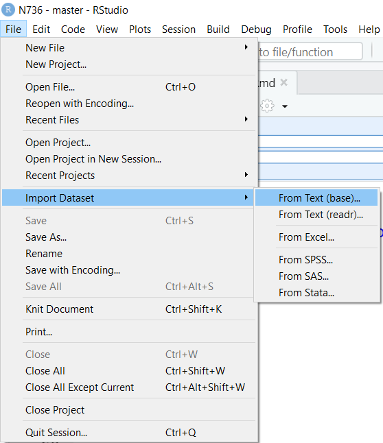
You can choose either the base or readr options:
base R import:
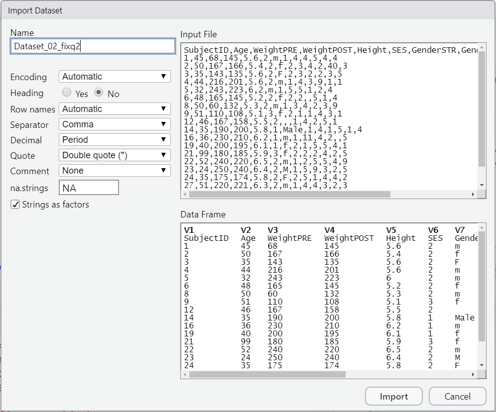
After clicking IMPORT you can see the R code run for this import in the CONSOLE window. You can save this code for future use as needed.
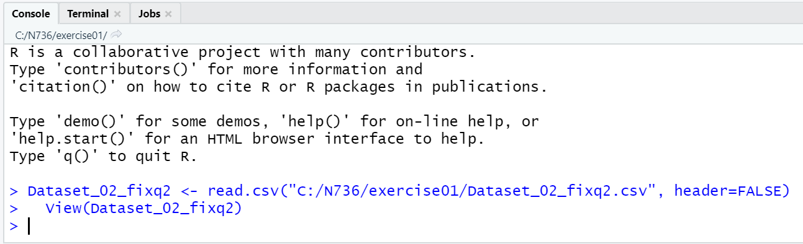
readr package (tidyverse) import:
The R code for this import is shown in the CODE PREVIEW at the bottom right - you can cut and paste this code to save for future use.
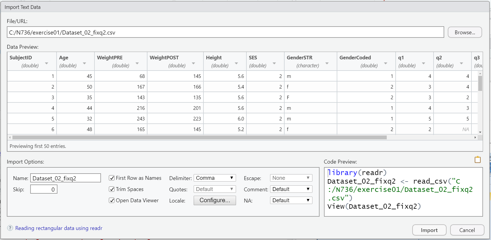
Previous Notes - Reviewing the dataset - for Homework 01
In today’s class we’ll get started exploring and finding the issues and problems with the dataset you’ll be working with for Homework 01. See Homework 1 instructions.
NOTES from Class Today homework1_notes.txt
ALL Class discussions and videos
All classes will be recorded and the video posted at the EchoALP link on Canvas for NRSG 736.
Weblinks to be discussed during class:
Journal of Biostatistics - author guidelines for “Reproducible Research” https://academic.oup.com/biostatistics/pages/General_Instructions.
Washington Post Article on “An Alarming Number of Scientific Papers Contain Excel Errors” https://www.washingtonpost.com/news/wonk/wp/2016/08/26/an-alarming-number-of-scientific-papers-contain-excel-errors/?utm_term=.8ec47ce8bc16.
Genome Biology 2016 Paper on “Gene name error are widespread in the scientific literature” https://genomebiology.biomedcentral.com/articles/10.1186/s13059-016-1044-7.
“The Excel Error heard Around the World” https://newrepublic.com/article/112951/rogoff-reinhart-and-world-excel-error-research & more at http://nymag.com/daily/intelligencer/2013/04/grad-student-who-shook-global-austerity-movement.html.
“How Bright Promise in Cancer Testing Fell Apart” - Duke cancer trials controversy http://www.nytimes.com/2011/07/08/health/research/08genes.html?mcubz=1 & “An array of errors” http://www.economist.com/node/21528593.
“A Manifesto for Reproducible Science” https://www.nature.com/articles/s41562-016-0021.
Center for Open Science https://cos.io/ & COS History https://cos.io/about/brief-history-cos-2013-2017/.
Science “One in Five Genetics Papers Contains Errors Thanks to Microsoft Excel” http://www.sciencemag.org/news/sifter/one-five-genetics-papers-contains-errors-thanks-microsoft-excel.
Other links you might want to explore
Gitbook https://www.gitbook.com/.
Bookdown https://bookdown.org.
Yihui Xie’s book on the
bookdownpackage https://bookdown.org/yihui/bookdown/.Github repo for Yihui Xie’s “Dynamic Documents with R and knitr” - 1st 3 chapters available online https://github.com/yihui/knitr-book.
Garrett Grolemund and Hadley Wickham’s book “R for Data Science” - also online at http://r4ds.had.co.nz/ & if you’re interested, here is the Github repo for their book https://github.com/hadley/r4ds.
Tidyverse https://www.tidyverse.org/.
Copyright © Melinda Higgins, Ph.D.. All contents under (CC) BY-NC-SA license, unless otherwise noted.
unless otherwise noted.